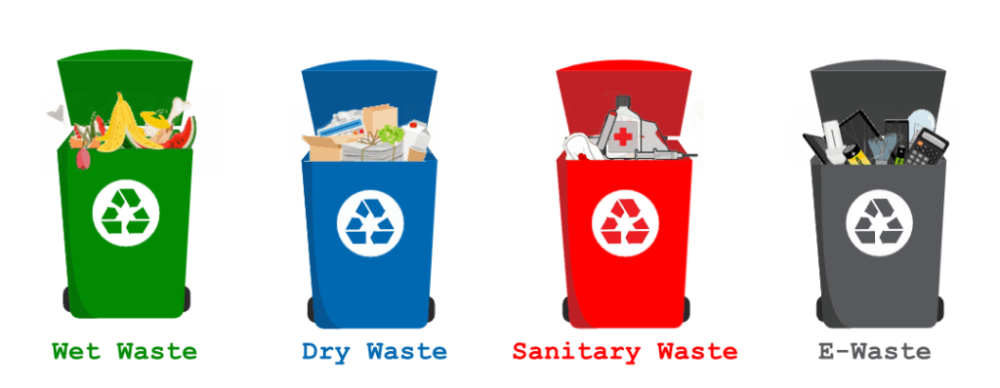
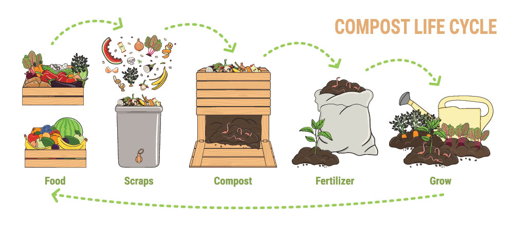

0
Clean-up Drives
0
Kg Waste Collected
Types of Waste

Different types of waste require different disposal methods. Understanding them helps prevent pollution and improves recycling efficiency.
- Organic: Vegetable peels, food waste – compostable
- Dry Waste: Paper, plastic, glass – recyclable
- Hazardous: Batteries, bulbs, e-waste – needs special disposal
How to Segregate

Segregate at home into 3 bins: green (organic), blue (dry), and red (hazardous).
Eco-Friendly Disposal Tips
- 🏡 Try composting at home using a compost bin
- ♻️ Reuse jars, bottles, paper for crafts and storage
- 📦 Donate reusable items instead of throwing them
- 💻 Use e-waste drives for old electronics

🧠 Quick Waste Awareness Quiz
Which bin would you throw used batteries in?